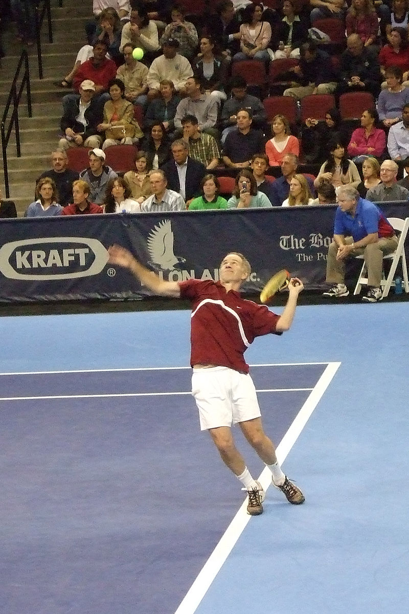

John McEnroe

John Patrick McEnroe (Wiesbaden, NSZK, 1959. február 16. –) amerikai profi teniszező, korábbi világelső. Karrierje során egyéniben 7 Grand Slam-tornát nyert, ebből négyet a US Openen (1979, 1980, 1981, 1984), hármat Wimbledon (1981, 1983, 1984). Ezen kívül párosban 9 Grand Slam-címet szerzett, 5-öt Wimbledonban (1979, 1981, 1983, 1984, 1992), 4-et a US Openen (1979, 1981, 1983, 1989), sőt vegyes párosban is diadalmaskodott egyszer (1977, Roland Garros, párja: Mary Carillo volt).
1992-ben vonult vissza az aktív versenyzéstől (a világranglista 20. helyén állt). Máig emlékezetesek művészi ütései, páratlan röptejátéka, Björn Borggal való rivalizálása, és a pályán tanúsított lobbanékony, heves viselkedése: sokszor keveredett összetűzésbe a játékvezetővel, vonalbírókkal. „Ezt nem gondolhatja komolyan” – az 1981-es wimbledoni bajnokságon hangzott el a játékvezetőnek címzett, mára már szállóigévé váló mondat.
Magánélete
McEnroe 1986 és 1994 között Tatum O'Neal , a színész Ryan O'Neal lánya volt , és a kettőnek három gyermeke volt, Kevin, Sean és Emily. A házasság felbontása után eredetileg a gyermekek közös felügyeletére került sor, de 1998-ban az O'Neal drogproblémái miatt egyedül őrizetbe vették a McEnroe-t.
1997-ben McEnroe feleségül vette a rock énekesnőjét, Patty Smyth-ot , akivel két lánya van, Megan és Ava.
A McEnroe több mint 15 000 dollárt adományozott a demokrata politikusoknak.
Sikerei
- 1979 US Open Vitas Gerulaitis
- 1980 US Open (2) Björn Borg
- 1981 Wimbledon Björn Borg
- 1981 US Open (3) Björn Borg
- 1983 Wimbledon (2) Chris Lewis
- 1984 Wimbledon (3) Jimmy Connors
- 1984 US Open (4) Ivan Lendl
Film
A McEnroét Shia LaBeouf ábrázolta a svéd birodalmi Borg / McEnroe , amely 2017-ben jelent meg a versenytársaikkal és különösen az 1980-as Wimbledon döntőjével .